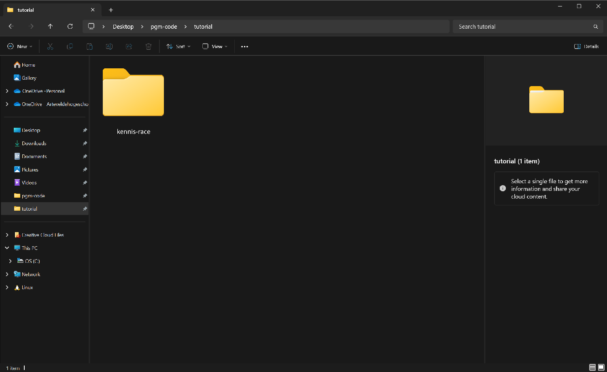
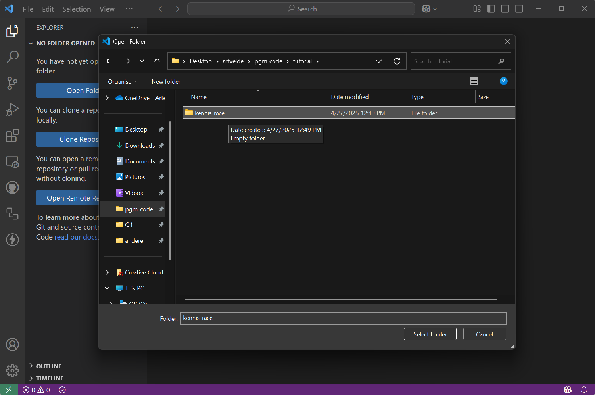
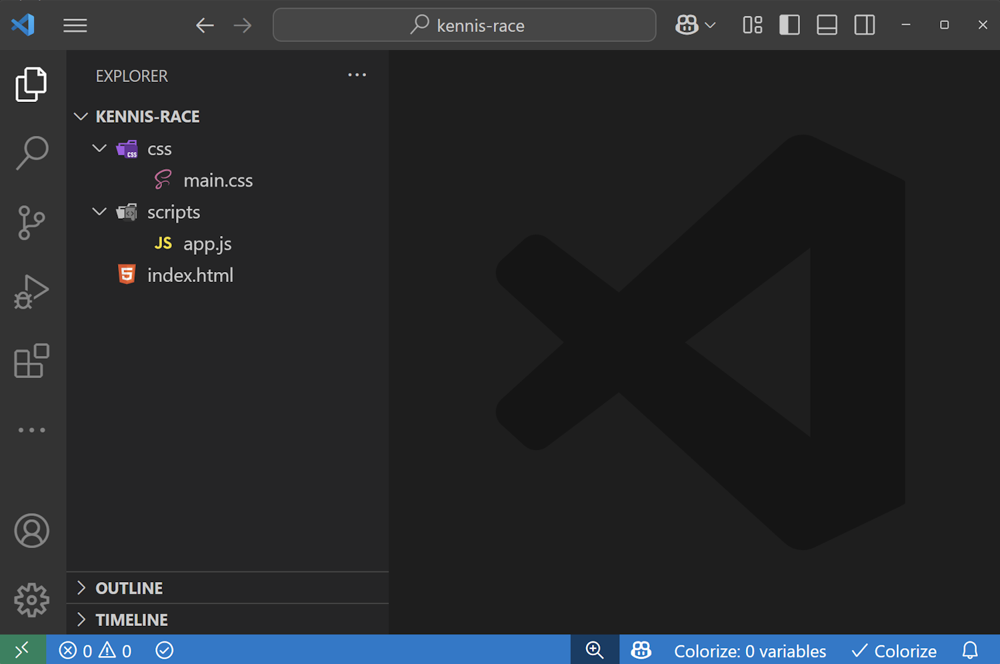
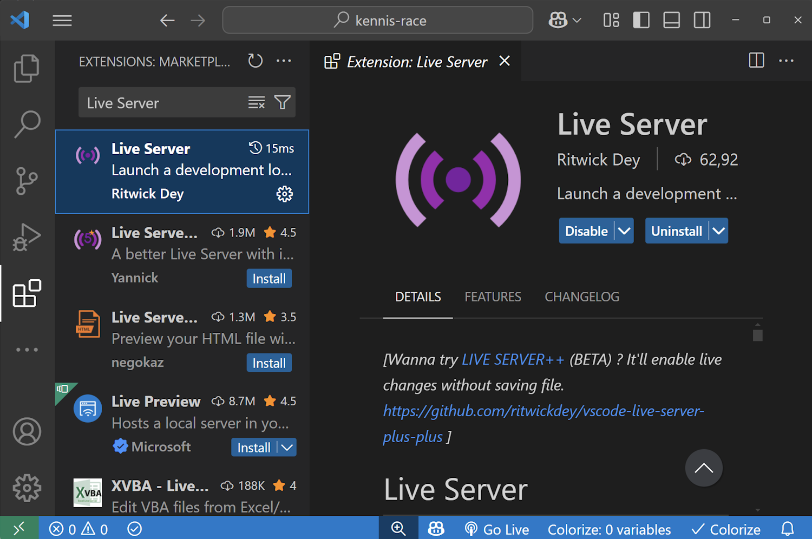
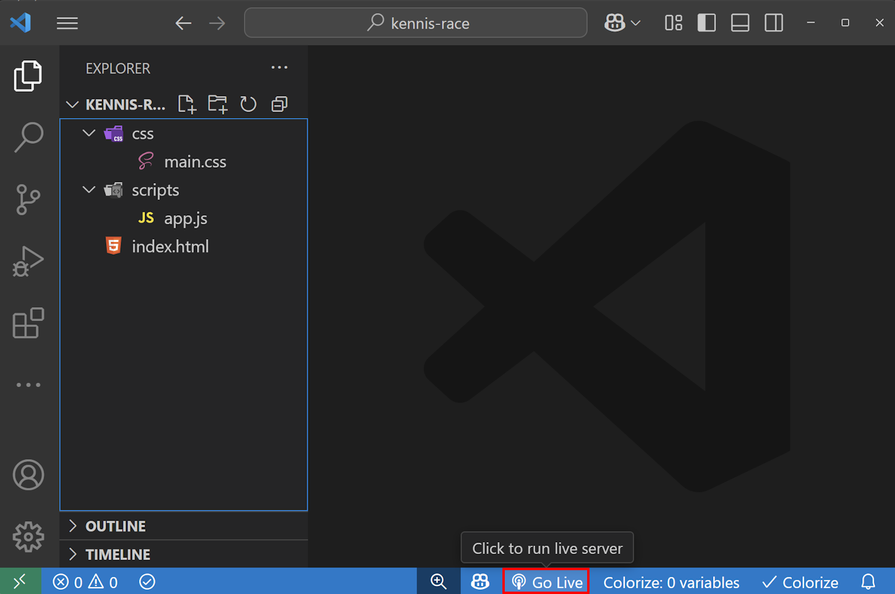
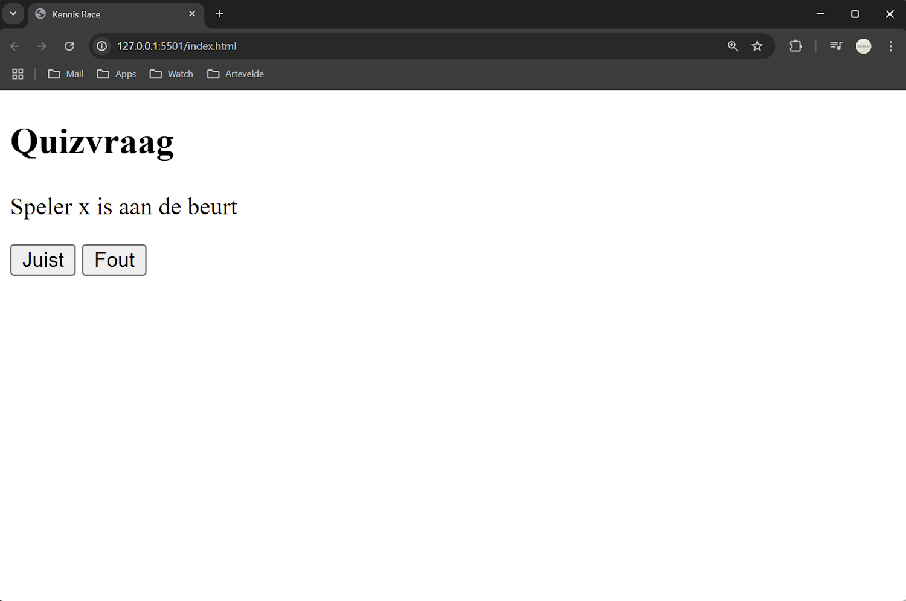
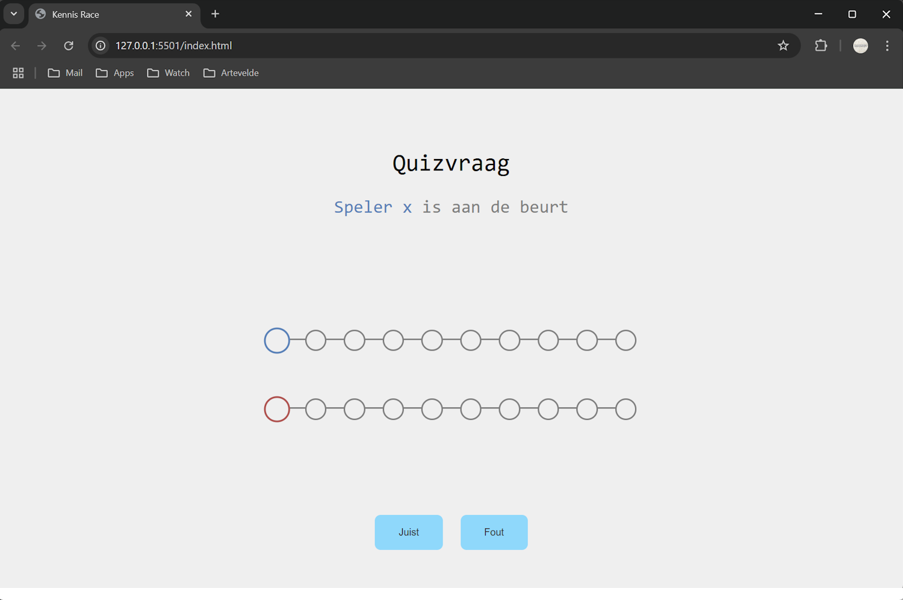
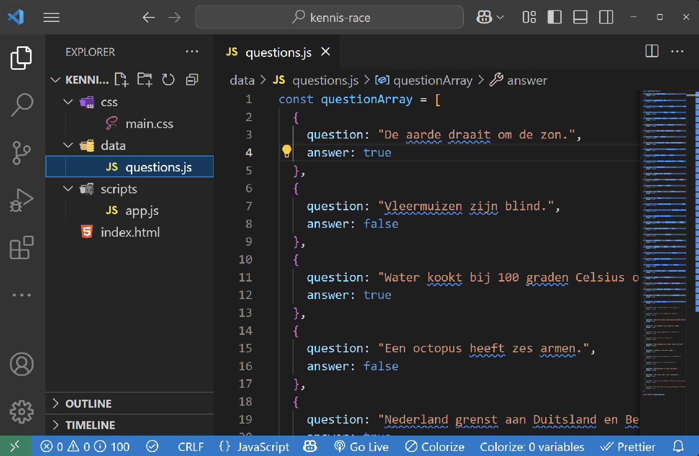
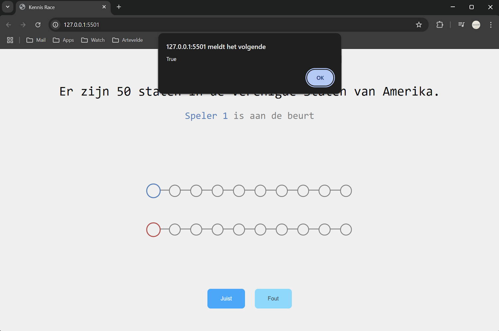

Wat gaan we maken?
In deze tutorial maken we een quiz-minigame waarbij je 1 tegen 1 kunt spelen. De eerste speler die 10 punten behaalt, wint de game.
Hiervoor gebruiken we 3 codetalen:
- HTML
- CSS
- JavaScript

Stap 1: Mappenstructuur
Ga naar de officiële website van Visual Studio Code. Op de startpagina zie je meteen een knop om de versie te downloaden die geschikt is voor jouw besturingssysteem (Windows, macOS of Linux). Klik op de knop om het installatiebestand te downloaden. Zodra je dit hebt gedaan kunnen we aan de slag met programmeren!
- 1.1 Maak een nieuwe folder met de naam kennis-race. 
- 1.2 Open Visual Studio Code en open de nieuwe folder. 
- 1.3 De map- en bestandsstructuur ziet er zo uit: 
- 1.4 Installeer de Live Server extensie in Visual Studio Code. 
- 1.5 Start de Live Server door onderaan op Go Live te klikken. Dit opent een nieuw browservenster met je project. 
Stap 2: HTML
HTML vormt de basis van je website. Gebruikersinteractie volgt later.
-
2.1 Kopieer onderstaande code in het index.html bestand. Dit is de basis stuctuur van een webpagina.
<!DOCTYPE html> <html lang="en"> <head> <meta charset="UTF-8"> <meta name="viewport" content="width=device-width, initial-scale=1.0"> <title>Kennis Race</title> <link rel="preconnect" href="https://fonts.googleapis.com"> <link rel="preconnect" href="https://fonts.gstatic.com" crossorigin> <link href="https://fonts.googleapis.com/css2?family=Major+Mono+Display&display=swap" rel="stylesheet"> <link rel="stylesheet" href="./css/main.css"> </head> <body> <main class="quiz"> <!-- Voeg hier code toe --> </main> <script type="module" src="./scripts/app.js"></script> </body> </html>
2.2 Voeg nu deze code toe aan je index.html, tussen de <main> en </main> tags.
<section class="quiz__content">
<h1 class="quiz__question">Quizvraag</h1>
<p class="quiz__turn">
<span class="quiz__player--1">Speler x</span>
is aan de beurt
</p>
<p class="quiz__answer"></p>
</section>
<section class="buttons">
<button class="button button--true">Juist</button>
<button class="button button--false">Fout</button>
</section>
Nu zal je webpagina er zo uitzien, een titel met subtitel en twee knoppen.

Deze code zal nog niet visueels toevoegen, maar later worden dit de voortgangsbalken van de spelers.
<section class="quiz__progress">
<div class="progress progress--player1">
<div class="progress__step progress__step--current"></div>
<div class="progress__step"></div>
<div class="progress__step"></div>
<div class="progress__step"></div>
<div class="progress__step"></div>
<div class="progress__step"></div>
<div class="progress__step"></div>
<div class="progress__step"></div>
<div class="progress__step"></div>
<div class="progress__step"></div>
</div>
<div class="progress progress--player2">
<div class="progress__step progress__step--current"></div>
<div class="progress__step"></div>
<div class="progress__step"></div>
<div class="progress__step"></div>
<div class="progress__step"></div>
<div class="progress__step"></div>
<div class="progress__step"></div>
<div class="progress__step"></div>
<div class="progress__step"></div>
<div class="progress__step"></div>
</div>
</section>
Stap 3: CSS
CSS zorgt voor de vormgeving en stijl van je website.
-
3.1 Plak deze code in je main.css bestand. Dit geeft een mooie layout aan het spel.
Zo zal je pagina er uitzien. Alle kleuren kun je zelf kiezen en aanpassen, hoe je zelf het spel eruit wil laten zien. body { font-family: monospace; margin: 0; background-color: #efefef; } .quiz { display: flex; flex-direction: column; justify-content: center; align-items: center; height: 100vh; gap: 8rem; text-align: center; } .quiz__content { font-size: 1.5rem; } .quiz__question { font-size: 2rem; font-weight: 500; } .quiz__turn, .quiz__answer, .quiz__link { color: #7e7e7e; font-weight: 400; } .quiz__answer { position: absolute; left: 50%; transform: translateX(-50%); } .quiz__progress { display: flex; flex-direction: column; align-items: center; gap: 4rem; } .quiz__player--1 { color: #4b81bd; } .quiz__player--2 { color: #bd4b4b; } .progress { position: relative; display: flex; justify-content: space-between; width: 500px; padding: 0 10px; } .progress--player1 { .progress__step--completed { background: #4b81bd; } .progress__step--current { background: #efefef; border: 2px solid #4b81bd; transform: scale(1.2); } } .progress--player2 { .progress__step--completed { background: #bd4b4b; } .progress__step--current { background: #efefef; border: 2px solid #bd4b4b; transform: scale(1.2); } } .progress::before { content: ''; position: absolute; top: 12px; left: 15px; right: 15px; height: 2px; background-color: #7e7e7e; z-index: 0; } .progress__step { position: relative; width: 25px; height: 25px; background: #efefef; border: 2px solid #7e7e7e; border-radius: 50%; transition: all 0.3s ease; z-index: 2; } .buttons { display: flex; justify-content: center; align-items: center; gap: 1.5rem; font-size: 1rem; } .button { background-color: #77daff; color: #333; padding: 1rem 2rem; border: none; border-radius: .5rem; cursor: pointer; } .button:hover { background-color: #0af; color: #fff; transition: background-color 0.3s ease, color 0.3s ease; }
Stap 4: JavaScript
JavaScript geeft functionaliteit aan het spel.
-
4.1 Het eerste wat we gaan doen is zorgen dat we quizvragen hebben. Iedere quizvraag bestaat uit een question en een answer. Een answer kan true of false zijn.
Download questions.js, een bestand met 50 quizvragen en plaats deze in de data folder.  -
4.2 In app.js schrijf je helemaal bovenaan je bestand deze code.
We importeren de array van vragen en initialiseren enkele variabelen die we later gaan gebruiken.import questionArray from "../data/questions.js"; let player1Score = 0, player2Score = 0; let currentPlayer = 1; let currentAnswer = null; let isWaiting = false; const $questionDisplay = document.querySelector(".quiz__question"); const $playerTurnDisplay = document.querySelector(".quiz__turn"); const $answerDisplay = document.querySelector(".quiz__answer"); const $trueButton = document.querySelector(".button--true"); const $falseButton = document.querySelector(".button--false"); -
4.3 Voeg nu onder de initialisatie deze lege functies toe.
function startGame() { initButtons(); updatePoints(); playerTurn(); } function playerTurn() { } function initButtons() { } function updatePoints() { } startGame(); -
4.4 Nu gaan we een random vraag tonen op de website.
Schrijf in de functie playerTurn() onderstaande code.
Hierin halen we een random vraag uit de array, en tonen we deze in $questionDisplay.
Als je nu je website herlaad, wordt er elke keer een random quizvraag getoont.function playerTurn() { const randomQuestion = questionArray[Math.floor(Math.random() * questionArray.length)]; $questionDisplay.innerHTML = randomQuestion.question; currentAnswer = randomQuestion.answer; // Hier komt nog code... } -
4.5 Nu gaan we tonen welke speler aan de beurt is. Dit doen we aan de hand van de variabele currentPlayer.
Voeg in de functie playerTurn() deze lijn code toe.
Hiermee tonen we de variabele currentPlayer op de website.$playerTurnDisplay.innerHTML = `<span class="quiz__player--${currentPlayer}">Speler ${currentPlayer}</span> is aan de beurt`; -
4.6 Vervolgens willen we onze knoppen laten werken. Schrijf deze code in de functie initButtons()
De isWaiting variabele is nodig om spammen tegen te houden. Enkel wanneer deze true is, kunnen we drukken op een knop
Voor nu schrijven we een alert als we op een knop drukken. Later passen we dit aan.function initButtons() { $trueButton.addEventListener("click", () => { if (!isWaiting) { alert('Op juist gedrukt'); //wordt in stap 4.8 aangepast } }); $falseButton.addEventListener("click", () => { if (!isWaiting) { alert('Op fout gedrukt'); //wordt in stap 4.8 aangepast } }); }
Test dit eens door op de knoppen te drukken.  -
4.7 Nu willen we de punten van de spelers kunnen zien. In index.html hebben we per speler een progress bar met 10 stappen.
De huidige score van de spelers wordt aangeduid door de klas "progress__step--current".
De juist beantwoorde vragen worden aangetoond met "progress__step--completed". Wijzig updatePoints().
Deze functie haalt de twee elementen met de klasse .progress op en verwijdert bij ieder child-element de klasse progress__step--current.
Vervolgens voegt hij, afhankelijk van de score per speler (maximaal 9), de klassen progress__step--current en progress__step--completed toe aan het juiste stap-element.
Vergeet ook niet om deze functie onderaan in playerTurn() op te roepen!function updatePoints() { const playerPoints = document.querySelectorAll('.progress'); const scores = [player1Score, player2Score]; playerPoints.forEach((points, index) => { for (const child of points.children) { child.classList.remove('progress__step--current'); } if (scores[index] < points.children.length) { if(scores[index] < 10) { points.children[scores[index]].classList.add('progress__step--current', 'progress__step--completed'); } } }); if (player1Score > 9) { playerWins(1); } else if (player2Score > 9) { playerWins(2); } }
Test deze functie door bovenaan je code de waardes van player1Score en player2Score aan te passen naar een getal onder de 10.
Je zal zien dat de gekleurde circles van plaats veranderen. -
4.8 De volgende stap is zorgen dat we vragen kunnen antwoorden door de knoppen te gebruiken.
Dit doen we door een nieuwe funtie checkAnswer() te maken. We geven deze functie 2 dingen mee; het laatst gegeven antwoord en het correcte antwoord.
Als deze twee gelijk zjin, geven we de huidige speler een punt. Als deze niet gelijk zijn geven we de andere speler een punt.
Dit wordt ook getoont in de $answerDisplay. Aan het eind van de functie switchen we van speler en voeren we een delay uit van 1000ms.
Voer deze functie uit in plaat van de geschreven alert in de initButtons() functie.function checkAnswer(givenAnswer, correctAnswer) { isWaiting = true; if (givenAnswer === correctAnswer) { currentPlayer === 1 ? player1Score++ : player2Score++; $answerDisplay.innerHTML = `Correct! Speler ${currentPlayer} +1 punt`; } else { currentPlayer === 1 ? player2Score++ : player1Score++; $answerDisplay.innerHTML = `Incorrect! Speler ${currentPlayer === 1 ? 2 : 1} +1 punt`; } currentPlayer = currentPlayer === 1 ? 2 : 1; setTimeout(() => { playerTurn() }, 1000); }
Geef true mee als er Juist knop wordt gedrukt, en false mee als er op de fout knop wordt gedrukt.checkAnswer(true, currentAnswer);
Als we nu op onze knoppen drukken zien we dat er 'Correct' of 'Incorrect' komt te staan en ook wie het punt krijt.checkAnswer(false, currentAnswer); -
4.9 Nu moeten we zorgen dat nadat er op een knop wordt gedrukt, de volgende ronde goed wordt gestart.
Wis na iedere vraag het $answerDisplay en zet de variabele isWaiting terug op false.
Voeg deze twee lijnen code toe aan de functie playerTurn();
Nu zal de het spel volledig werken en kan je om de beurt een vraag beantwoorden.$answerDisplay.innerHTML = ""; isWaiting = false;
Het enige wat nu nog mist is een winnaar... -
4.10 We maken een nieuwe functie genaamd playerWins(). Deze functie geef je het id van een speler mee, 1 of 2.
In deze functie maken we de twee knoppen onzichtbaar, en geven we weer welke speler is gewonnen in $questionDisplay.
Ook maken we een manier om het spel opnieuw te spelen, door een link naar de pagina te tonen in $playerTurnDisplay.
Nu moeten we deze functie oproepen, wanneer een speler 10 puntent heeft. Deze code controleert of er een speler 10 punten heeft, en roept dan de functie playerWins() op mt het juiste Id.function playerWins(playerId) { $trueButton.style.display = "none"; $falseButton.style.display = "none"; $questionDisplay.innerHTML = `Speler ${playerId} wint het spel!`; $playerTurnDisplay.innerHTML = "<a class='quiz__link' href='/game.html'>Speel nog eens</a>"; }
Voeg deze code onderaan in de functie updatePoints() toe.if (player1Score > 9) { playerWins(1); } else if (player2Score > 9) { playerWins(2); }
Klaar! Nu zou je een werkende 1-tegen-1 quiz minigame moeten hebben. Je kan makkelijk je eigen vragen toevoegen in het questions.js bestand